To morph two images, correspondence points must be defined on each image in the same order. I used the cpselect tool in MATLAB to select points on a portrait of myself and a portrait of the famous Chinese movie star, Daniel Wu. Each image has 48 selected points.

 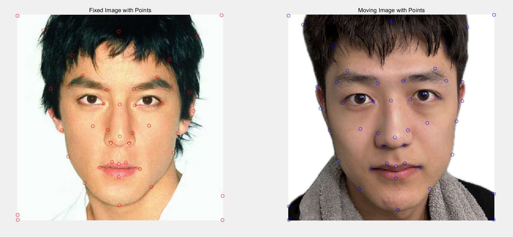
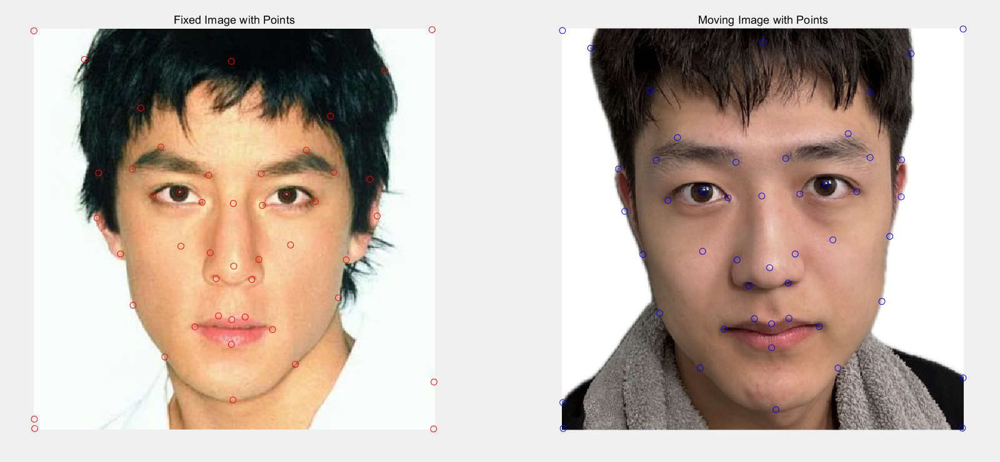
Using these points, I computed the triangulation for the midway face between the two images.
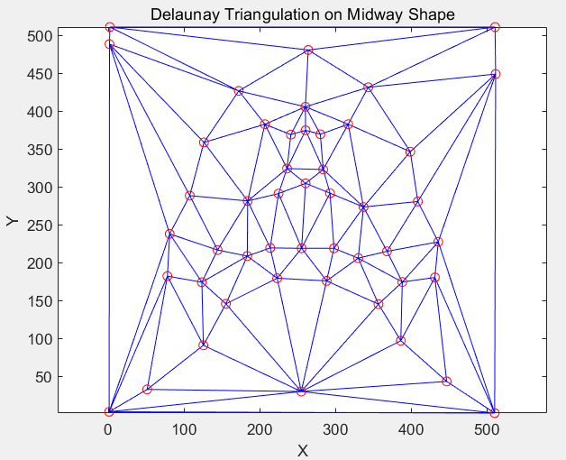To create a mid-way face between two different faces:
For the first step, the average shape is just the average of each correspondence—the mean correspondences that we used for a Delaunay triangulation.
For warping, I iterated through all triangles in the original images. For each triangle, I computed its bounding rectangle using cv2.boundingRect, created a mask to isolate the triangle, and warped this to the target location. The triangle's effective part was then extracted using the mask and added to the target image.
After morphing the shapes, the colors of the two images are averaged to create the mid-way image.
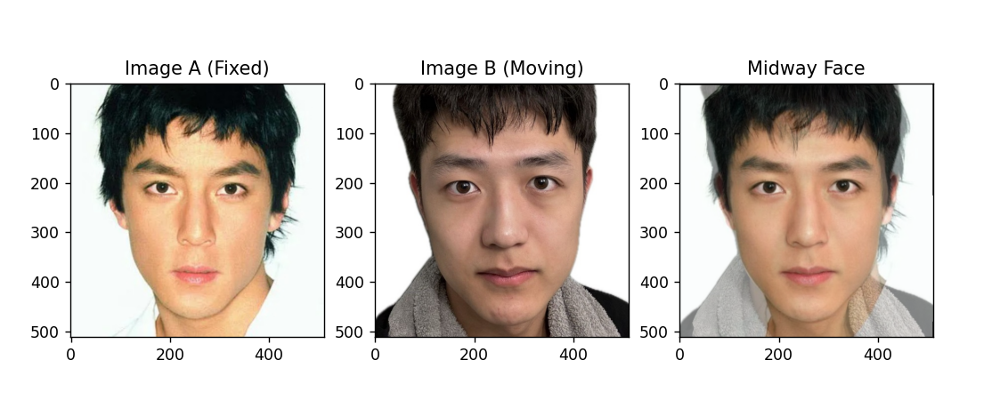To create a morph sequence from one face to another, the process from Part 2 was repeated with varying fractions of warping and cross-dissolving. The parameter controlling the amount of warping and cross-dissolving varied from 0 to 1, with a step size of 1/30.

The photographs used are from the FEI face database, which contains images of 200 individuals from the Artificial Intelligence Laboratory of FEI in São Bernardo do Campo, São Paulo, Brazil. The database is divided into neutral faces and expression subsets.These images are annotated with 46 correspondences.
To compute the mean face of a population:
Below are examples of faces from the dataset, warped into the average shape for both neutral and expression subsets:
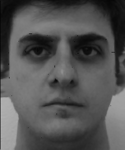 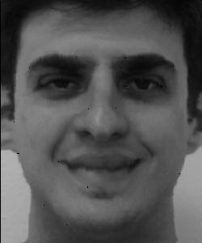 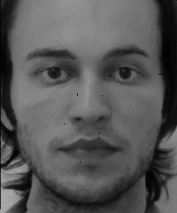 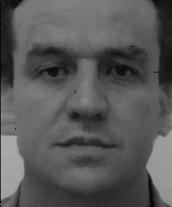 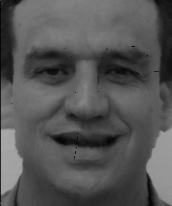 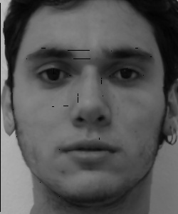Here are the average neutral and expression faces:
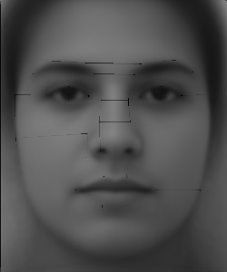 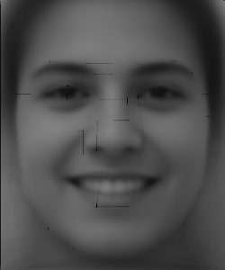Here is how my face looks when warped into the average geometry (a little bit ugly).
Using the dataset and the computed average face, I conducted a PCA analysis to obtain the principal components for neutral and smiling faces, displaying the first eight components:
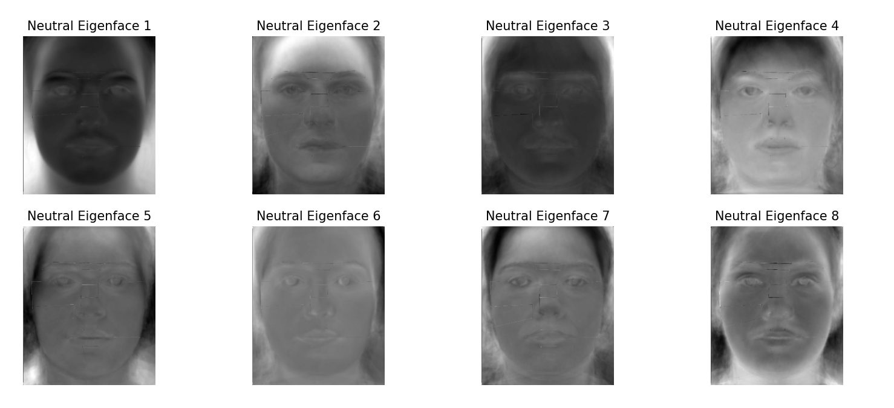
To reconstruct my average face, I projected it onto the principal component space. As more principal components are used, the reconstructed face increasingly resembles the original image:
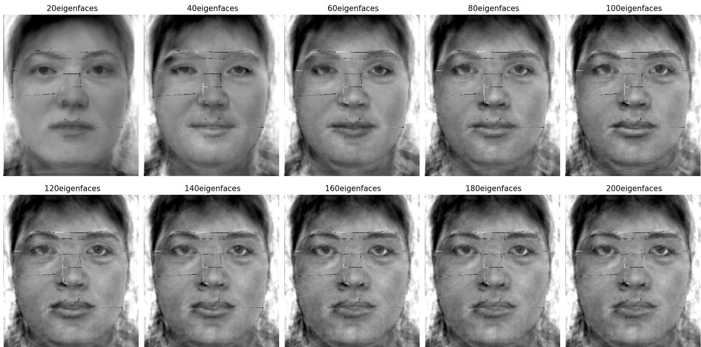